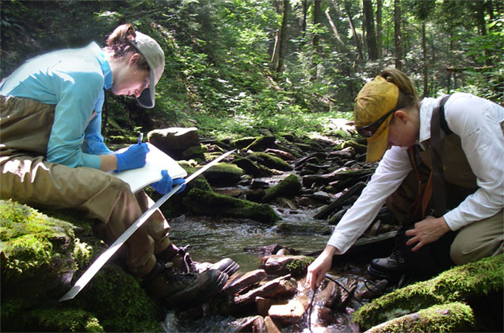

Sustainable UCL keeping UCL green
About Us
The UCL sustainbility Team aims to progress the university's key sustainability goals. Working together with the UCL community of staff anf students, we aim to integrate sustainbility into research, infrastructure and behaviours in UCL.

Get Involved
What students and staff can do to help UCL stay green and sustainable. There are many volunterring opportunities offered for students to participate.

Research
UCL is a leading institute in environmental research. Keep up to date with the latest discoveries and innovation in sustainability research.